Giacomo
Bozzato
Bozzato
 Send an email
Send an email Giacomo Bozzato
Giacomo Bozzato @giacomobozzato
@giacomobozzatoHi! 👋 I'm a communication designer with a strong drive for strategy, entrepreneurship, and research. Interested in posthumanism, sustainability, and digital media. I do photography and filmmaking, art direction
and branding, user experience and interfaces.
and branding, user experience and interfaces.
La Superscomoda
speculative design
2021
This is a speculative design project that deals with the problem of sedentary life style. We made a functioning prototype of a smart and interactive chair that, overturning the seat, forces the user to stand up regularly. La Superscomoda is also provided with an electronic system that measures the usage data and display them live on a web platform. Imagining a future scenario in which this project was plausible, we designed the visual identity of the brand dissit, parody of the well-known italian firms of furniture design.
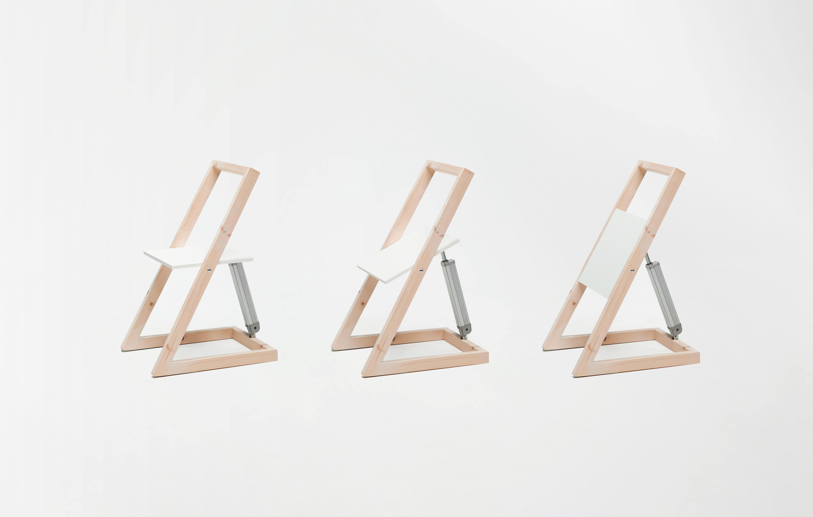
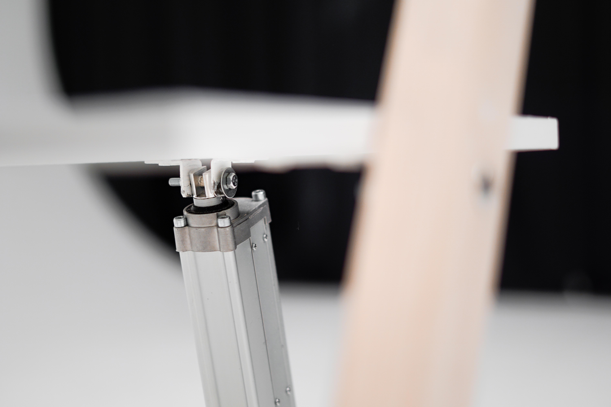
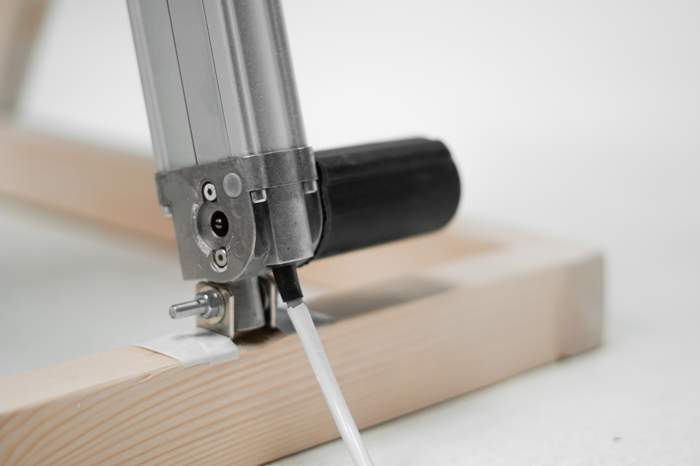
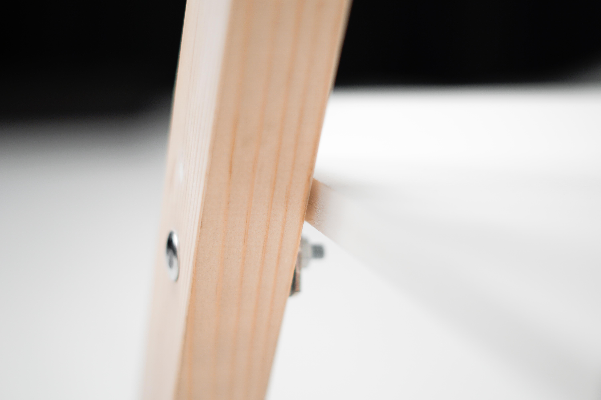
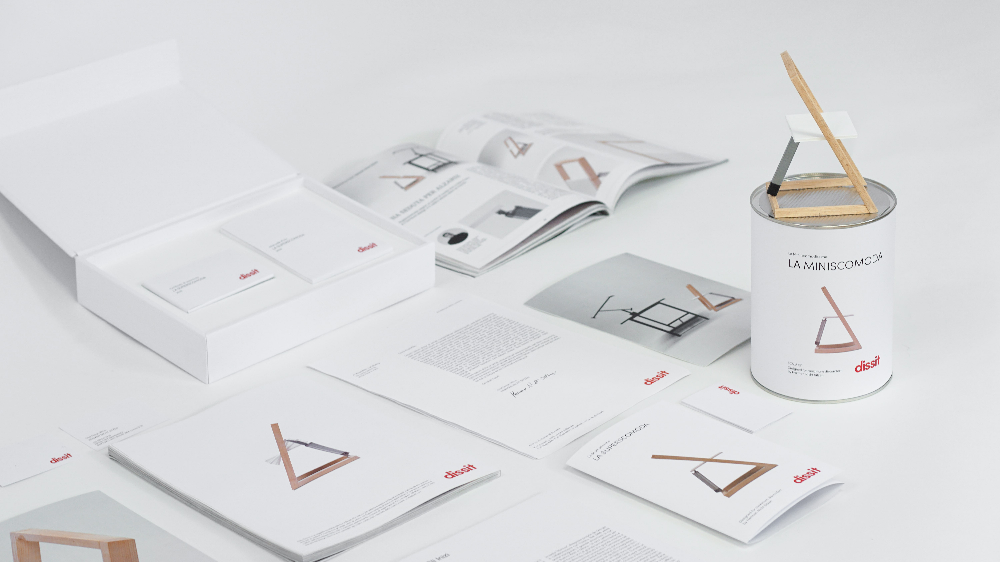
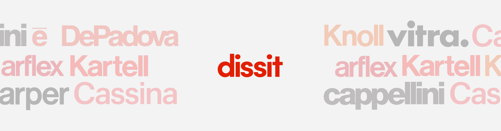
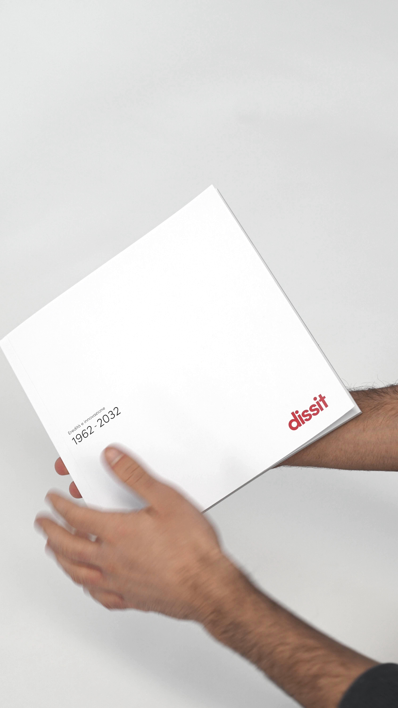
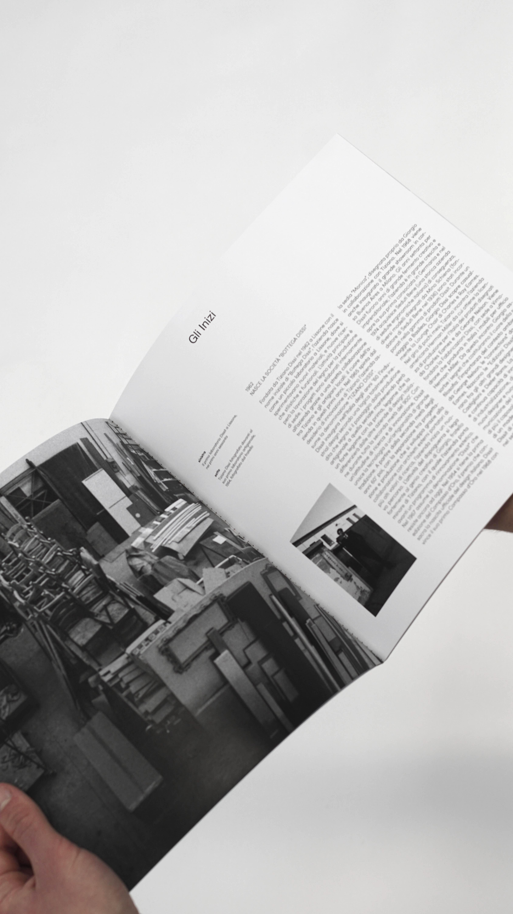
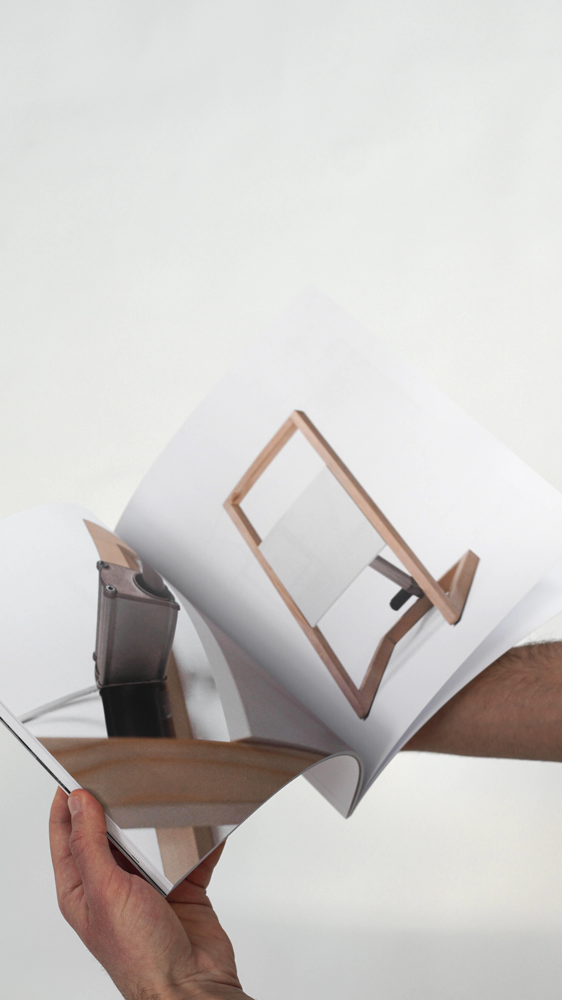
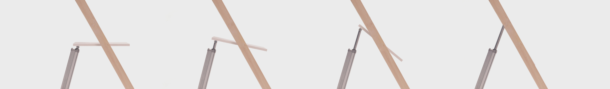
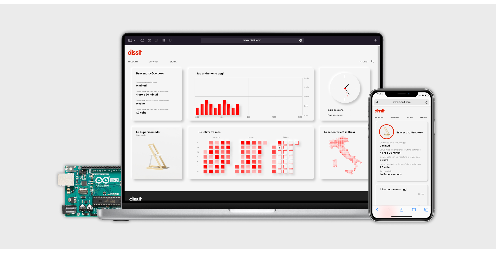